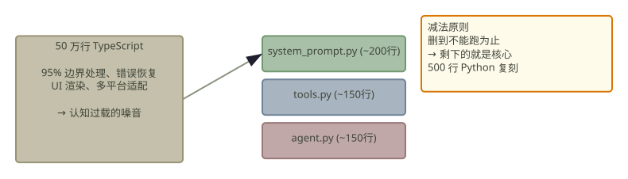

事实 1: Claude Code 是当前最强的 Agentic 编程工具，但其 Agent Loop 对绝大多数用户是黑盒。
事实 2: 原始仓库 50 万行 TypeScript，认知过载导致"陷细节"与"读不动"。
事实 3: 核心逻辑其实只有 3 个文件 —— System Prompt、Tool Loop、Agent Runtime。
「 复刻一个 nano 跑一跑，胜过读万卷源码。 」

02 / Agenda
极致减法：解构复刻协议
Q1: 事实 2→3 的压缩逻辑 —— 如何从 50 万行中精准提取 核心 3 文件？
Q2: 事实 1 的黑盒拆解 —— Agent Loop 的内部结构如何还原？
Q3: Spec-Driven 阅读流 + 500 行 Python 复刻的 工程路径。
Q4: 理解核心后，如何更高效地释放 Agent 生产力？
03 / Mechanism I
减法原则：从完整项目进化到 Nano 麻雀
逻辑 Nano 化: 剥离所有边缘依赖，仅保留核心 Bash 工具调用。
效率 Nano 化: 优先保证逻辑闭环，运行效率后置。
选型: 放弃原版 TS，选择 Python 是为了 极致降低认知载荷。
心态: 为学习而拆解，关注 核心逻辑骨架 胜过所有边界管理。
「 每一层删除都是一次深度的理解。 」
04 / Mechanism II
阅读流重塑：架构理念学习优于实现细节
核心认知: 与 Agent 交互重于具体代码实现，专注写好 Spec-Driven 规范。
执行策略: 喂给 Claude Code 全量源码，输出架构和工程细节的 Markdown 文档。
策略: 文档先行。先把理解写下来，再通过 Agent 辅助实现代码。
核心点: 专注为 Agent 划定行动边界，而非死磕单点代码实现。
「 Spec 即代码，文档即指令。 」
🍌 nano-banana
Minimalist Excalidraw-style: three boxes connected by arrows — "Spec" → "Agent Boundary" → "Code". Hand-drawn, black ink, white background, stick-figure developer at the start.
05 / Mechanism III
开发起点：从一个 REPL 循环开始
Minimalist Loop: 建立 AsyncAnthropic 流式对话的最小 REPL。
ACI 接入: 建立第一个 Bash Tool，实现 Agent 与系统硬反馈的闭环。
确定性: 追求每一次交互的原子化与幂等性。
「 Agent 的原子单位不是工具调用，是 REPL 里的一次对话。 」
from anthropic import AsyncAnthropic
async with client.messages.stream(
model="claude-3-7-sonnet",
messages=[{"role": "user",
"content": "ls"}]
) as stream:
# Agentic Loop starts here
06 / Mechanism IV
逆向工具链：快速获取源码的逻辑骨架
zread-cli: 实现极速索引与全目录提取。
Deepwiki: 自动化构建工程知识图谱，消除依赖盲点。
Claude /init: 利用原生初始化功能获取上下文快照。
「 逆向源码的文档，而非搬运源码的细节。 」
🍌 nano-banana
Minimalist Excalidraw-style: three tool icons vertically — terminal "zread", node graph "Deepwiki", stick-figure with "/init". Hand-drawn, black ink, white background.
07 / Mechanism V
Test-Driven：让 OpenClaw 负责最终验证
隔离验证: 部署独立的 OpenClaw 实例操作 terminal 进行黑盒测试。
自动化闭环: Agent 实例扮演用户，验证文档与代码的一致性。
硬核指标: 成功率 (Pass@1) 是衡量逻辑完整性的唯一标准。
「 最好的测试员是另一个 Agent。 」
🍌 nano-banana
Minimalist Excalidraw-style: two stick-figure agents facing each other across a terminal — left "Dev", right "Tester". Pass/fail badge between them. Hand-drawn, black ink, white background.